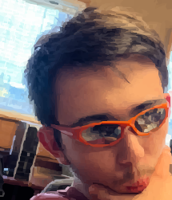
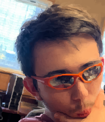

My name is Aidrin Morris, I'm working towards becoming a tech support specialist. I've kind of fallen off the technical train and have been thinking of switching up to something different, but am currently torn on what. I've been doing online school as I live in the middle of nowhere and the nearest campus is over two hours away. (The picture of me in glasses was taken on a flip phone and then upscaled.)
I have lots of hobbies and would call myself a jack of all trades in a sense. I'll do practically anything. Here's an uncompleted list of things I do.
Some of the things I like to do:
I love the creative arts. I make music, write my own stories, and paint/draw.
I collect old things, either by metal detecting or antiquing.
I build my own computers, I have built three so far. Working on a fourth.
I love listening to music. I listen to practically everything, from digital hardcore to jazz.
I like to watch and read anime/manga in my free time. Some of my favorite anime/manga are Knights of Sidonia, Neon Genesis Evangelion, and Ghost in the Shell.
I enjoy playing Magic: The Gathering and Dungeons & Dragons with my friends. The high school I went to has game nights on Monday, which I attend regularly. I also make custom MTG cards.
I love driving and working on cars. If the gas and car/part prices weren't so high, I would drive and work on cars more often.
I'm pretty shy, but I'm trying to push myself to talk to more people. Living in the middle of nowhere doesn't help though, so I usually do everything online. If you maybe wanted to talk to me about anything I mainly use Discord. My username is tizerofthesanann or my id: 1253912376588107868. (tizerofthesanann is a name I came up where I used to work.)